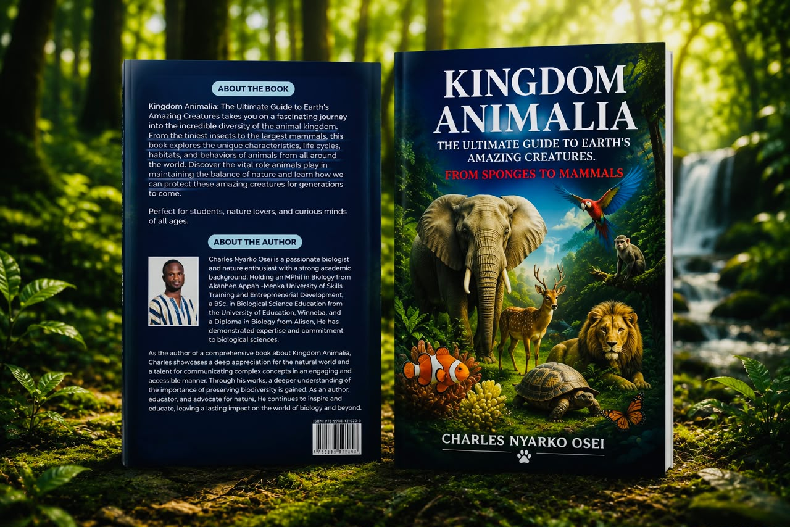
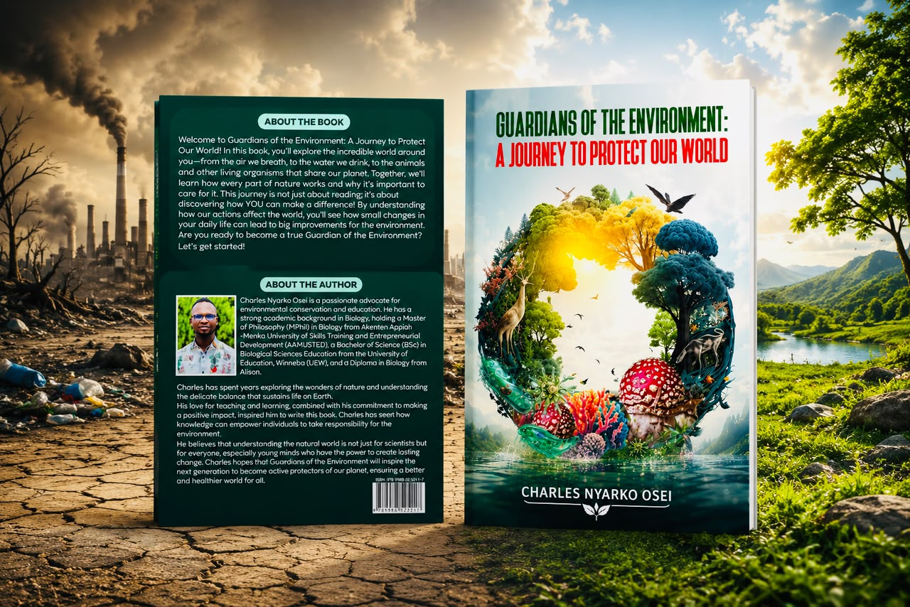
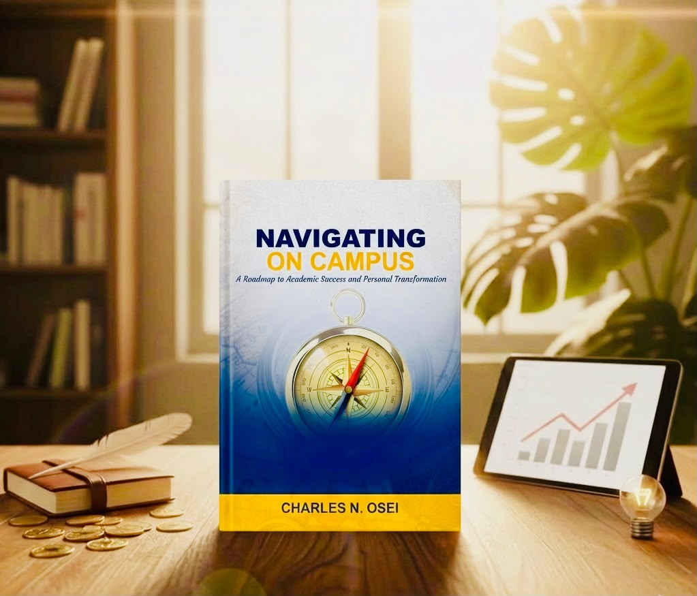

Career objective
To advance biology research, teaching, environmental stewardship, and sustainable solutions that address global challenges and improve human well-being.
Educator · Biologist · Author
Charles Nyarko Osei brings biology, education, research, and environmental stewardship together to make knowledge practical, meaningful, and useful to the world around us.
01 / The person
Charles is a professional and licensed teacher, biologist, researcher, author, environmental advocate, and agripreneur. His work is grounded in a simple conviction: when people understand the living world, they are better equipped to care for it.
He holds a BSc in Biological Sciences Education from the University of Education, Winneba, and an MPhil in Biology, specializing in Anatomy and Physiology, from AAMUSTED. His academic interests span human and animal physiology, science education, agriculture, environmental conservation, and the relationship between science and everyday life.
02 / Curriculum vitae
A concise overview of Charles's education, professional experience, research, and service.
Download full CV ↓Career objective
To advance biology research, teaching, environmental stewardship, and sustainable solutions that address global challenges and improve human well-being.
Education
AAMUSTED
University of Education, Winneba
Nsutaman Catholic Senior High School
Professional experience
Divine Winners Company Limited · Sustainable agricultural solutions and organic biostimulants
Stepping Stone Christian School · Science education and learner development
University of Education, Winneba, Mampong Campus
Unity International School · Christ is Alive International School · Nsutaman Catholic SHS
Research & publications
Leadership & recognition
02 / Areas of impact
From the microscopic to the societal, Charles works at the intersection of knowledge and responsibility.
Making scientific knowledge clear, practical, and accessible for learners at every stage.
Learn more ↗Exploring anatomy, physiology, and the patterns that shape living systems.
03 / Selected publications
Explore selected research connected to biology, physiology, nutrition, and science education.
HAL science archive
View the publication record and research details in the HAL open archive.
ResearchGate PDF
Read the study on growth, haematology, serum biochemistry, and organ histology.
Academia.edu paper
Access the additional research paper hosted in the Academia.edu archive.
04 / The bookshelf
His books turn curiosity into care, giving young readers a vivid way into the natural world and their own potential.

Featured title
A vivid journey through Earth's incredible diversity, from the tiniest insects to the largest mammals, and the fragile relationships that hold life together.
Enquire about the book ↗
A call to care
A thoughtful guide to the everyday choices and collective action that can help protect our shared home.
Enquire about the book ↗
For the next chapter
A practical roadmap for academic success, personal transformation, and purposeful student life.
Enquire about the book ↗Education should do more than transfer information. It should develop thoughtful people who can solve problems, serve others, and contribute meaningfully to society.

05 / Start a conversation
For speaking, teaching, research, publishing, environmental initiatives, or collaboration, reach out directly.
oseinyarkoclacious@gmail.com ↗